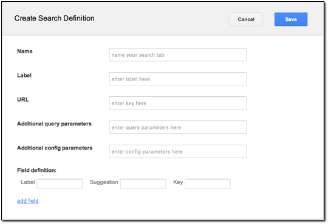
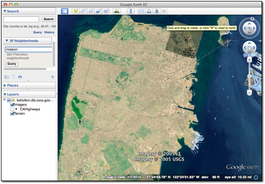

Configuring a Searchable Database¶
Search tabs allow Google Earth EC and Google Maps users to search external databases on Google Earth Enterprise Servers as well as non-Google servers. For example, if you have a database of San Francisco neighborhoods that contains specific information that your users need about each neighborhood, you can add a search tab called SF Neighborhoods and configure it to search for neighborhoods in your database, even if that database is stored on another server. Google distributes some sample databases with the Google Earth Enterprise Server.
The first thing you need to do is create a search tab definition using the Search tabs page of Google Earth Enterprise Server. Then you can associate the search tab with a published database. The exercises in this lesson show you how to perform both steps.
Define Search Tab
To define a new search tab:
Access the Google Earth Enterprise Server Admin console in a browser window by going to myserver.mydomainname.com/admin, replacing myserver and mydomainname with your server and domain.
Sign in with the default credentials:
- Username: geapacheuser
- Password: geeadmin
Click Search tabs.
Click Create new. The Create Search Definition dialog appears.

Enter SFNeighborhoods in the Name field as the unique name for your search tab.
Enter San Francisco Neighborhoods in the Label field.
This label will appear on the search tab that displays with your database in Google Earth EC.
Enter /gesearch/ExampleSearch in the URL field.
The ExampleSearch is one of the search plug-ins that are available with Google Earth Enterprise Server. ExampleSearch provides a searchable database of information about San Francisco neighborhoods.
Enter flyToFirstElement=true&displayKeys;=location in the Additional query parameters field.
These query parameters specify that Google Earth EC flies to the first element of your search results and displays the location key in the results.
Tip
When a Google Earth EC user specifies a search value, the Key value is associated with the value specified by the user and added to the
URL GETrequest submitted to the example plug-in. It does not necessarily correlate to a field in the search database.For Additional config parameters, leave the field blank.
For Field Definitions, enter San Francisco Neighborhood in the Suggestion field and q in the Key field.
This is one of the plug-in examples supplied with Google Earth Enterprise Server. For more information about plug-ins for search tabs and the other fields in this dialog, see Create Search tabs.
Click the Save button. Now the search tab is ready for you to add to your databases.
Add Search Tab To Your Database
To add search tabs to your database:
In Google Earth Enterprise Server, click Databases on the Admin console.
The Databases page appears.
Check the box next to the SFHighways database that you built in Defining and Building Databases and click Unpublish.
The Publish point and Virtual host fields update to unpublished.
Even though you published the database before, you must publish it again to include the new search tab.
Click the Publish button. The Publish dialog appears.
Accept the default Publish point of the database name, SFHighways and the version number.
Select SFNeighborhoods from the Search Tabs drop-down list.
Click Publish.
Google Earth Enterprise Server publishes the SFHighways database with the associated SFNeighborhoods search tab.
Launch Google Earth EC and log in to your server.
Warning
If you have logged in to this server with Google Earth EC previously, log out, clear your cache, and log back in. See Clearing the Google Earth EC cache.
Google Earth EC displays your database with the SF Neighborhoods search tab you specified.
